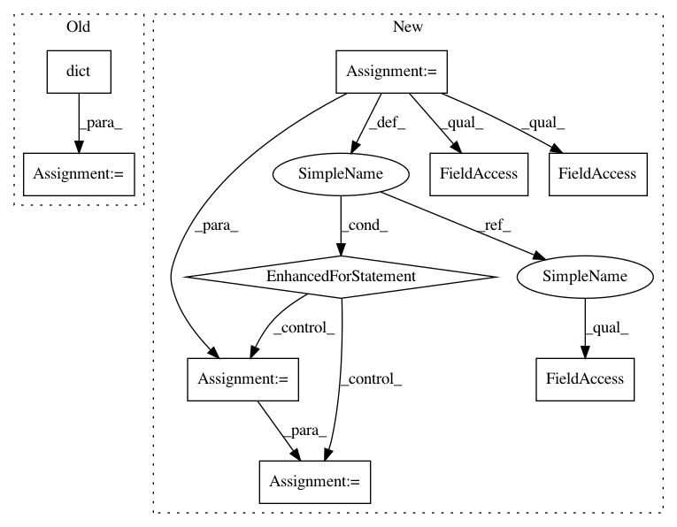

c4f3799d5713d467ca577a6d0593f242076c9540,tensorflow_datasets/core/test_utils.py,FeatureExpectationsTestCase,test_encode_decode,#FeatureExpectationsTestCase#,65
Before Change
fdict = features.FeaturesDict(
{exp.name: exp.feature for exp in expectations})
decoded_sample = features_encode_decode(
fdict, dict([(exp.name, exp.value) for exp in expectations]))
for exp in expectations:
self.assertAllEqual(decoded_sample[exp.name], exp.expected)
// TODO(rsepassi): test shape and dtype against exp.feature
After Change
def test_encode_decode(self):
// Maybe should try to use metaclass instead and dynamically generate one
// method per feature expectation.
for exp in self.expectations:
tf.logging.info("Testing feature %s", exp.name)
// Check the shape/dtype
self.assertEqual(exp.feature.shape, exp.shape)
self.assertEqual(exp.feature.dtype, exp.dtype)
// Check the serialized features
if exp.serialized_features is not None:
self.assertEqual(
exp.serialized_features,
exp.feature.get_serialized_features(),
)
// Create the feature dict
fdict = features.FeaturesDict({exp.name: exp.feature})
for test in exp.tests:
input_value = {exp.name: test.value}
if test.raise_cls is not None:
if not test.raise_msg:
raise ValueError(
"test.raise_msg should be set with {}for test {}".format(
test.raise_cls, exp.name))
with self.assertRaisesWithPredicateMatch(
test.raise_cls, test.raise_msg):
features_encode_decode(fdict, input_value)
else:
// Test the serialization only
if test.expected_serialized is not None:
self.assertEqual(
test.expected_serialized,
exp.feature.encode_sample(test.value),
)
// Test serialization + decoding from disk
decoded_samples = features_encode_decode(fdict, input_value)
self.assertAllEqual(test.expected, decoded_samples[exp.name])
// TODO(rsepassi): test shape and dtype against exp.feature
def features_encode_decode(features_dict, sample):
Runs the full pipeline: encode > write > tmp files > read > decode.
// Encode sample
encoded_sample = features_dict.encode_sample(sample)
In pattern: SUPERPATTERN
Frequency: 3
Non-data size: 9
Instances
Project Name: tensorflow/datasets
Commit Name: c4f3799d5713d467ca577a6d0593f242076c9540
Time: 2018-11-14
Author: epot@google.com
File Name: tensorflow_datasets/core/test_utils.py
Class Name: FeatureExpectationsTestCase
Method Name: test_encode_decode
Project Name: tensorflow/datasets
Commit Name: c4f3799d5713d467ca577a6d0593f242076c9540
Time: 2018-11-14
Author: epot@google.com
File Name: tensorflow_datasets/core/test_utils.py
Class Name: FeatureExpectationsTestCase
Method Name: test_encode_decode
Project Name: ilastik/ilastik
Commit Name: c8105b3974fba93097bd28e5ae14a27e5f56c857
Time: 2013-03-14
Author: bergs@janelia.hhmi.org
File Name: ilastik/applets/objectExtraction/objectExtractionSerializer.py
Class Name: SerialObjectFeaturesSlot
Method Name: deserialize
Project Name: keras-team/keras
Commit Name: 79edae58d5892c5a7eb19b68f9e79dfae4682e20
Time: 2016-09-09
Author: kuza55@gmail.com
File Name: keras/backend/tensorflow_backend.py
Class Name: Function
Method Name: __call__